Introduction
This section of my site delves into my career experience and the significant lessons I've gathered over the years. I believe that work experience, no matter what job, serves as a testament to one's ability to adapt to high-stress situations and acquire new skills. Here, I discuss my IT experience at Geek Squad, as well as my separate retail and sales expertise as a blue shirt within the Best Buy corporation. Additionally, I provide insights into my lengthy managerial role at Jenkinson’s Beach, spanning almost a decade, as well as my recent position as a Bar-back at Spring Lake Bath & Tennis, an exclusive members-only club. If you are interested in viewing my current resume, please feel free to click here!
Geek Squad
Sep. 2020 – Feb 2021
Consultant Agent Consultant Agent
My time at Geek Squad holds a special place in my memory. It was a pivotal experience that led me to shift my major from Mechanical Engineering to Information Technology. The role resembled an IT help desk, where I regularly aided clients with tech issues through scheduled appointments. This allowed me to apply my troubleshooting and PC skills while effectively communicating with tech-illiterate customers, a valuable skill honed during my time on the sales floor. My daily job routine included
- Promoting and educating clients on Geek Squad services and memberships such as Total Tech Support.
- Conducting efficient troubleshooting and repair of client devices during twenty-minute appointments.
- Accurately checking-in and checking-out devices requiring hardware fixes.
- Set up new computers for clients, configuring systems and ensuring optimal functionality.
- Ensuring safe storage of sensitive client information to prevent identity theft and fraud.
Best Buy
Sep. 2019 – Mar. 2020
Sales Associate Sales Associate
My time on the Best Buy sales floor predated my time at Geek Squad. For those unfamiliar, Geek Squad is a subsidiary of Best Buy, explaining the transition. I began as a sales associate, responsible for a designated section of the store (mine was PC and PC Accessories), assisting customers in selecting their purchases. The absence of commission incentivization, a deliberate business choice, empowered workers like myself to prioritize the customer's needs over the price. Recognizing my expertise, management extended an offer for a role at Geek Squad. My daily job routine included:
- Providing exceptional customer service by actively listening to customers’ tech needs and offering assistance.
- Educating customers on the latest software and hardware to help them find the right computer, tablet, or accessories to fit their needs.
- Demonstrating expertise in opening preferred memberships within Best Buy to enhance customer satisfaction and increase company revenue.

Jenkinson's Beach
May 2015 – Sep. 2023
Assistant Manager Assistant Manager
My job at Jenkinson’s was my first job ever. It proved to be a valuable experience, teaching me a range of "Blue Collar" skills that I might have otherwise never learned (shoveling, building snow fences, crafting picnic tables for the bar, etc.). Joining at 15, I remained there until the age of 23. Operating seasonally from May to September, it worked great for both high school and college schedules. Progressing from Beach Staff to North Senior Beach Attendant and ultimately to Assistant Manager, I gained substantial experience working with younger individuals, being responsible for them during work hours. My daily duties included:
- Being responsible for opening, closing, and maintaining the beach.
- In charge of regular garbage runs, transportation of other employees, movement of money, and general security/customer service with the use of light machinery like ATVs and Honda 4x4s.
- Trained new employees and ensured a properly functioning work environment.
Spring Lake Bath & Tennis
May - Sep. 2023
Barback Barback
My most recent place of employment was in a small town called Spring Lake, a members only club dubbed the Bath and Tennis Club, and it was my first time working in food service. While I had previous experience at fast-food establishments, this proved to be a very different environment. As a Barback, my role entailed working closely with the bartender, retrieving liquors, mixers, kegs, etc., as needed. I enjoyed learning about different types of drinks, and the varying challenges of the service. Witnessing the meticulous planning and execution involved in weddings and other member events provided me with invaluable insights into orchestrating a large group of employees to operate seamlessly. My daily responsibilities included:
- Setting up the bar for my bartender by acquiring rail-mats and stocking juices, beer, ice, white and red wines.
- Maintaining communication with my bartender and replenishing items as the night progressed.
- Interacting with members to ensure accurate billing for our services on our PoS system.